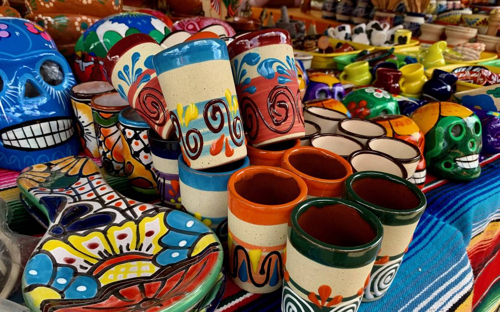
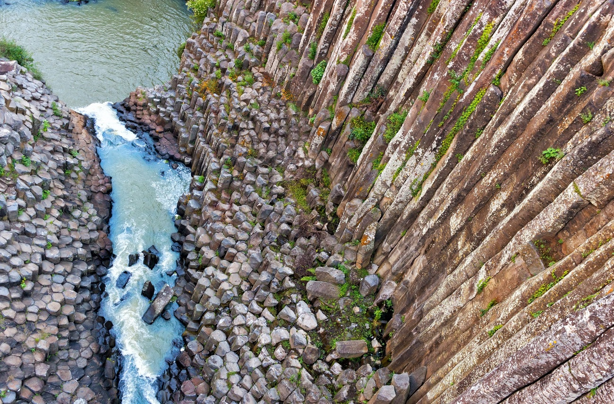
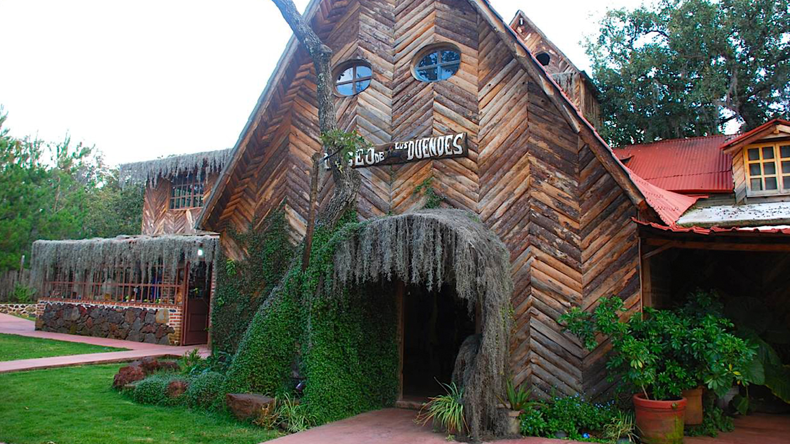
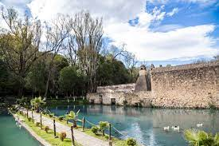
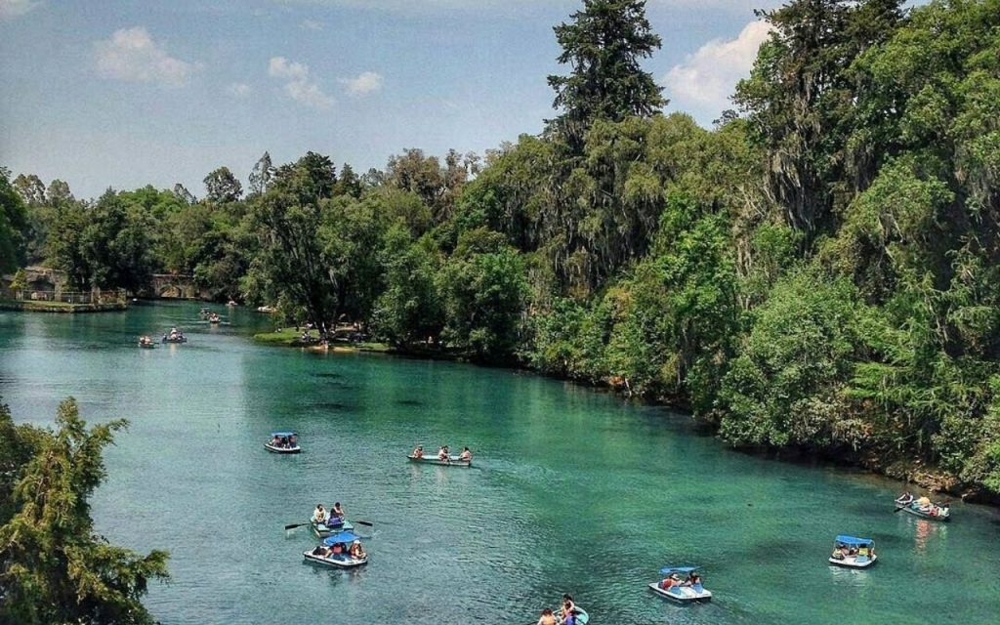
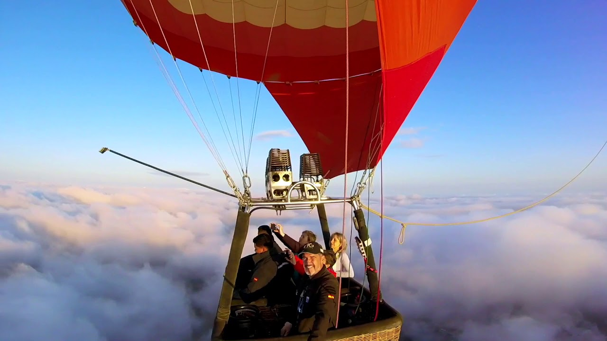
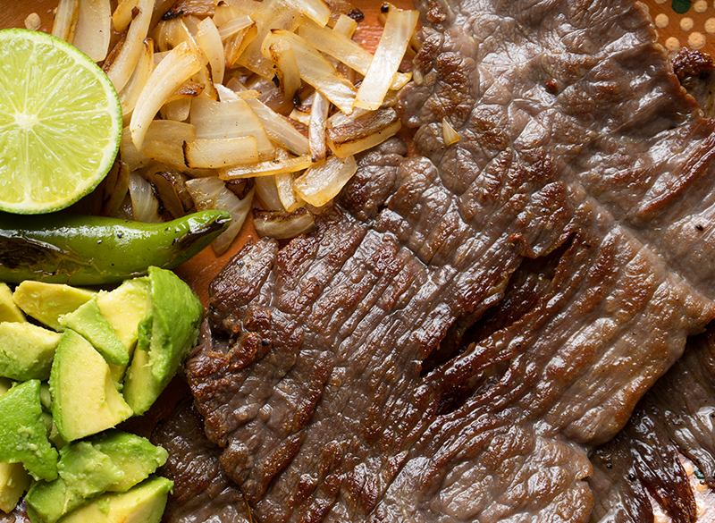
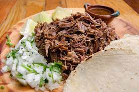
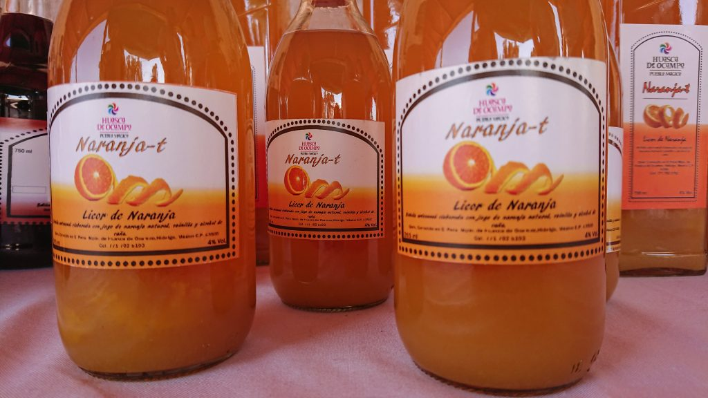

ARTESANIAS
Produce piezas de alfarería colorada, como platones, jarritos y ollas, es el lugar ideal para comprar vajillas de barro, incluyendo algunas piezas como cazuelas, salseras, jarritos y botaneros, puedes visitar algunos de sus talleres para conocer un poco más sobre la elaboración de los objetos de barro y a sí escoger cual es la decoración que más te gusta, también se elaboran instrumentos de cocina tallados en madera y algunos muebles de hierro forjado







ACTRACTIVOS
-Prismas Basálticos
Son columnas naturales de piedra con cinco o seis caras, formadas por el rápido enfriamiento de lava. Constituye una de la maravillas naturales que podemos apreciar en el país y es también uno de los tres prismas que hay en el mundo, junto con el de Hawái -que se encuentra bajo el agua- y el de Irlanda del Norte.
-Museo de los Duendes
Se cree que en Huasca rondan estos pequeños seres míticos y en una peculiar casa de madera en medio del campo puedes conocer más sobre ellos; se trata del Museo de los Duendes, si lo prefieres, también puedes realizar un recorrido nocturno en el Bosque de los Duendes en el Centro Vacacional Sierra Verde.
-Hacienda de Santa María Regla
Esta portentosa hacienda productora de plata fue casa del Conde de Regla. Se encuentra al fondo de una barranca y es protegida por los Prismas Basálticos, admirar sus muros te transportará a los tiempos de los señores feudales, gracias a sus muros pétreos y hermosa arquitectura. Algunos de sus atractivos principales son la capilla -de estilo barroco- el acueducto y la mazmorra, en donde, en otros tiempos, se encerraba a los enfermos de viruela y sarampión.
-Parque Ecoturístico Bosque de las Truchas
Este es el lugar indicado para la pesca de trucha arcoíris, aquí te rentan todo lo necesario para realizar este deporte y pasar un día agradable en familia o con amigos. Pero además podrás comer delicioso en alguno de los más de 20 restaurantes, dar paseos en lancha, a caballo o en cuatrimoto, asimismo, puedes lanzarte en tirolesa, explorar la Presa San Antonio y la Cueva del Conde.
-Iglesia de San Juan Bautista
Este recinto está dedicado al Santo Patrono de Huasca de Ocampo, por lo tanto, es la más importante para la localidad, fue edificada en el siglo XVI por frailes agustinos y en su interior se conservan varios retablos con notables pinturas de santos y pasajes de la vida de Jesús.
-Volar en globo
Huasca es uno de los lugares ideales para volar en globo aerostático, la experiencia por si sola es muy disfrutable pero además te regalará una bella postal del Pueblo, cuando el amanecer va pintando el horizonte.
GASTRONOMIA
-Trucha
La trucha la preparan en la mayoría de los restaurantes al horno, pero puedes pedirla también frita, al mojo de ajo,
a la mantequilla, a la diabla, rellena de mariscos o ahumada.
-Cecina
Si te vas por el lado de la cecina, te recomiendo pruebes los chilaquiles con cecina en salsa roja o verde. No es un
platillo muy distintivo del pueblo mágico pero decidimos incluirlo en la lista porque se ofrece mucho.
-Mariscos
Huasca de Ocampo te ofrece deliciosos platillos con mariscos
-Barbacoa
Otra de las especialidades de la zona es la rica barbacoa, si amas este platillo ¡no debes dejar de probarla!
-El Naranjete: La bebida típica de Huasca de Ocampo
Esta bebida no es muy conocida pero sí deliciosa. Se trata del “naranjete”, el cual se prepara al mezclar jugo de naranja,
vainilla, alcohol de caña y miel de abeja. Si te consideras un viajero que ama lo dulce no dejes de probarla




